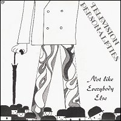

Television Personalities |
 1993 - Little Teddy - LITE709 - 7" Songs: I'm Not Like Everybody Else (Ray Davies) I Hear A New World (Joe Meek) I've Been Down So Long It Looks Like Up To Me (Lee Hazelwood) Whatever Gets You Through The Night (John Lennon)
Performed by Dan Tracy, Jowe Head and Jefferey Bloom A tribute to the Kinks, Joe Meek, Lee Hazelwood and Nancy Sinatra, John Lennon and Elton John. |